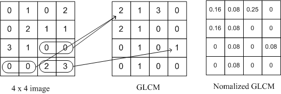

Gray Level Co-occurrence Matrix (GLCM) is used for texture analysis. We consider two pixels at a time, called the reference and the neighbour pixel. We define a particular spatial relationship between the reference and neighbour pixel before calculating the GLCM. For eg, we may define the neighbour to be 1 pixel to the right of the current pixel, or it can be 3 pixels above, or 2 pixels diagonally (one of NE, NW, SE, SW) from the reference.
Once a spatial relationship is defined, we create a GLCM of size (Range of Intensities x Range of Intensities) all initialised to 0. For eg, a 8 bit single channel Image will have a 256x256 GLCM. We then traverse through the image and for every pair of intensities we find for the defined spatial relationship, we increment that cell of the matrix.

Each entry of the GLCM[i,j] holds the count of the number of times that pair of intensities appears in the image with the defined spatial relationship.
The matrix may be made symmetrical by adding it to its transpose and normalised to that each cell expresses the probability of that pair of intensities occurring in the image.
Once the GLCM is calculated, we can find texture properties from the matrix to represent the textures in the image.
GLCM Properties
The properties can be calculated over the entire matrix or by considering a window which is moved along the matrix.